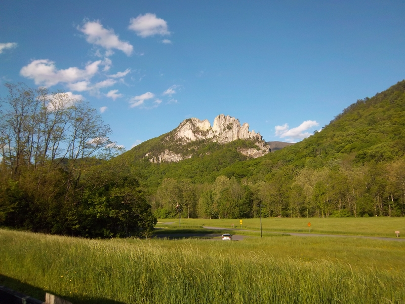
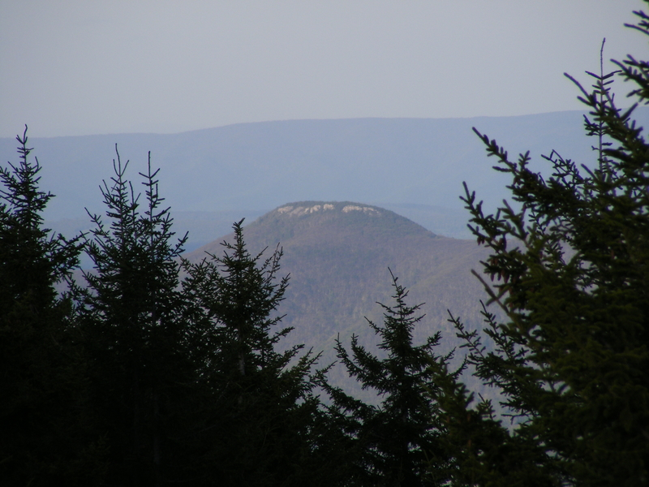

The beautiful Greenbrier valley in the eastern part of the state is mostly farmland, full of lush green pastures and streams famous for trout fishing.


Seneca Rocks is a breathtaking scene, and attracts climbers from all over the country.

At 4,863 feet above sea level, Spruce Knob is the highest point in the state, and is located only a few miles from Seneca Rocks.

The beautiful Greenbrier valley in the eastern part of the state is mostly farmland, full of lush green pastures and streams famous for trout fishing.
The Green Bank Observatory in Pocahontas County is home to the largest moving object on land in the world, the Robert C. Byrd Green Bank Telescope.
Located in a "quiet zone," where radio frequency interference is kept to a minimum and there is no wifi or cellular service, the 100x110 meter fully steerable telescope
has a surface area of about 2.3 acres, and is used to observe radio waves originating in space. At 485 feet in height, it's taller than the Statue of Liberty. Its 16 wheels
bear a load over a million pounds each. There is a visitor's center, and tours take you plenty close enough for photos, but you may want to bring a non-electronic camera for that,
as the least electronic devices can interfere with the operation of the telescope.
Blackwater Falls, located on the Blackwater River in Tucker County, features a 62-foot waterfall cascade where the Blackwater River transitions from Canaan Valley into Blackwater
Canyon. There are hiking trails throughout Blackwater Falls State Park, and also rafting adventures available!
Cheat Falls, on the Cheat River, is accessible by a train ride such as this one aboard the Tygart Flyer, out of Elkins, WV. If you've never taken a train ride before,
there are several available in West Virginia, including the famous Cass Scenic Railroad.